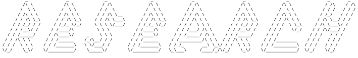

Besides the above mentioned projects I tested the (then new) NILU-CUBE instrument in 2015 before it was deployed in Colorado, USA. Amongst a variety of techniques, this testing included in situ measurements in different scenarios. I am also familiar with many of NASA satellite products, their file formats and I have an account on NASA's Goddard Earth Sciences Data and Information Services Center that is a database that provides access to a wide range of global climate data, concentrated primarily in the areas of atmospheric composition, atmospheric dynamics, global precipitation, and solar irradiance. In addition, tools I use frequently in my work include coding in python, machine learning techniques, matlab and git.
Introduction
I have a long history involving science and research that began at my early age and has continued with my involvement with several research projects.
I finished my bachelor’s degree in physics with a theoretical focus. I have completed my Master of Science and Ph.D courses and I am currently pursuing my Ph.D degree in physics, doing research under Prof. Knut Stamnes in the Light and Life Laboratory at Stevens Institute of Technology (SIT) and preparing my thesis. I am scheduled to defend my dissertation in Spring of 2023.
Specialization
I am specialized in radiative transfer and atmospheric physics. In my research I utilize radiative transfer methods, machine learning, simulations, coding, ground based measurements and satellite data. In my scientific article (Milos Sztipanov, Lubna Tumeh, Wei Li, Tove Svendby, Arve Kylling, Arne Dahlback, Jakob J. Stamnes, Georg Hansen, and Knut Stamnes, "Ground-based measurements of total ozone column amount with a multichannel moderate-bandwidth filter instrument at the Troll research station, Antarctica," Appl. Opt. 59, 97-106 (2020)) I used data gathered by a NILU-UV instrument and used a lookup-table method to determine and analyze ozone amount and ozone hole trends above Antarctica. The results were compared to the Ozone Monitoring Instruments' results that is deployed on NASA's Aura satellite.Laboratory
In the Light and Life Laboratory I am also responsible for data collection, management and processing, and calibrating/maintaining a NILU-UV instrument. As my next research, I studied atmospheric aerosols and their radiative and microphysical properties. Using radiative transfer simulations and additional methods I developed an algorithm to measure aerosol optical depth with this multichannel instrument. The results were compared to NASA's AERONET retrievals. The scientific article summarizing this research is currently under peer review at the Journal of Atmospheric Sciences. The co-authors on this preprint are: Tove Svendby (NILU), Arne Dahlback (NILU), Wei Li (SIT), KnutStamnes (SIT), Jakob Stamnes (SIT).Ongoing projects
Currently I am working on retrieving aerosol optical depth and different aerosol size distribution properties from our NILU-UV instrument, using machine learning techniques. I already have promising aerosol optical depth results. As part of this project I successfully used machine learning to retrieve ozone amount and cloud optical depth from the same NILU-UV instrument. I am planning to publish my findings in the next months.Besides the above mentioned projects I tested the (then new) NILU-CUBE instrument in 2015 before it was deployed in Colorado, USA. Amongst a variety of techniques, this testing included in situ measurements in different scenarios. I am also familiar with many of NASA satellite products, their file formats and I have an account on NASA's Goddard Earth Sciences Data and Information Services Center that is a database that provides access to a wide range of global climate data, concentrated primarily in the areas of atmospheric composition, atmospheric dynamics, global precipitation, and solar irradiance. In addition, tools I use frequently in my work include coding in python, machine learning techniques, matlab and git.